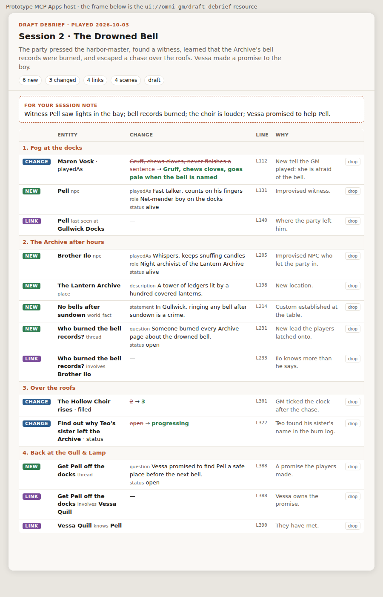

Prototype for ticket #8 · branch prototype/store-and-debrief-view · invented example data · round 1 locked, round 2 open.
/mcp · convex-mcp-gateway componentsessions, discovery, auth hook, audit log · resolveIdentity(static token) → ownerAgents choose parameters well and similar tool names badly, so each tool covers one area and a parameter picks the operation. Unauthenticated callers see zero tools and get -32001 Unauthorized.
story_read view: overview | schema | entities | entity
kind?, nameContains? (entities, max 25)
entityId?, withHistory? (entity; history = scene, transcript line, why, commit)
debrief action: open | propose | drop | show | commit → always returns { result, draft }
open: sessionId | newSession{adventureId, playedOn, scenes[]}, summary, shortSummary
propose: debriefId, changes[{ scene, change, transcript{line, quote}, why }]
drop: debriefId, changeIds[]
commit: debriefId
_meta.ui.resourceUri = ui://omni-gm/draft-debrief (every call shows the Ledger)
story_correct reason, changes[{ change, why, sceneId? }] all or nothing, one commit
schema_change reason, ops[ add_kind | add_property | retire_property | add_relationship_type ]
separate on purpose: the client's tool-approval prompt is the deliberate step (D4)
change = create_entity{tempKey, kind, name, properties} | set_property{entity, key, value}
| relate{type, from, to} | unrelate{type, from, to} // entity = id or $tempKey
rejected: "mood" is not a property of npc. Allowed: playedAs, role, status.
A new property needs a deliberate schema_change.Rendered by the prototype MCP Apps host from a live debrief show through the gateway. Clicking drop calls debrief through the host and re-renders.

Structure tables (D2): campaign → adventure → session → scene. One debrief per session, with draft rows until commit (D3). Each commit (debrief | correction | schema | seed) updates entities/relationships and appends history rows, indexed by entity, in one transaction.
| Kind | Properties |
|---|---|
| npc | role · playedAs · status alive|dead|missing|unknown |
| player_character | concept |
| place | description |
| world_fact | statement |
| thread | question · status open|resolved|dropped |
| character_goal | goal · status open|progressing|fulfilled|abandoned |
| clock | segments · filled · visibility shown|hidden · whenFull |
| Relationship | From → to (directed, label + inverse label, no properties in v1) |
last_seen_at | npc, player_character → place |
located_in | place → place |
involves | thread, world_fact → npc, place, player_character, world_fact |
pursues | player_character → character_goal |
pressures | clock → thread, player_character, place |
knows | npc, player_character → npc, player_character |
The code is the same everywhere. Hosting on cloud dev means one convex login plus convex dev against a cloud project. ADR 0001 says "start local", so it needs an amendment (D9).
bunx mcp-remote <url> --header "Authorization: Bearer …". It works today, but only on machines with that config.auth.config.ts plus the gateway's OAuth discovery, and AuthKit's dynamic client registration for claude.ai. It works in every client, but it's the auth work ADR 0001 deferred._meta.ui on debrief, the text/html;profile=mcp-app resource, and an unauthenticated caller rejected. It's young (v2.1.1), so pin the version.before value, so a correction can restore it, and the draft gate sits in front.convex login); OAuth.returns validators (so no structuredContent), and the view is plain HTML rather than React and Tailwind.